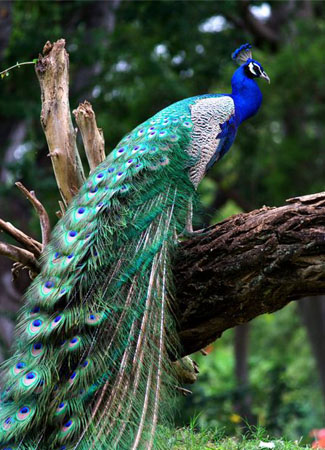

Exploring Sri Lanka's Iconic Wildlife:
Welcome to the mesmerizing world of Sri Lanka's diverse and enchanting wildlife. Nestled in the heart of the Indian Ocean, this island nation is a treasure trove of unique flora and fauna that captivates the hearts of nature enthusiasts and wildlife aficionados alike. From the majestic Sri Lankan elephant to the elusive leopards that roam the lush landscapes of Yala National Park, the country boasts a remarkable array of iconic animals. Join us on a virtual journey as we explore the rich biodiversity that defines Sri Lanka, from the vibrant birdlife to the marine wonders along its pristine coasts. Each creature tells a story of resilience and adaptation, creating a tapestry of life that makes Sri Lanka a true paradise for wildlife enthusiasts.
Asian Elephant
Sri Lanka boasts one of the highest densities of Asian elephants in the world. These majestic creatures can be found in various national parks, such as Udawalawe and Minneriya. Visitors have the opportunity to witness these gentle giants in their natural habitat, often engaging in social behaviors and cooling off in waterholes.
Srilankan Leopards
The elusive Sri Lankan leopard, also known as the "Ceylon leopard," is a subspecies native to the island. Yala National Park is renowned for being one of the best places to spot these elusive big cats. With their distinctive golden coats and striking rosette patterns, the Sri Lankan leopard is a symbol of the island's biodiversity.
Sloth Bear
Sri Lanka is home to the sloth bear, a unique species characterized by its shaggy coat and distinctive V-shaped white mark on its chest. Wilpattu National Park is a prime location for observing these fascinating bears as they forage for food in the dense forests.

Peacock
Sri Lanka is home to the enchanting Indian Peafowl, or peacock, celebrated for its vibrant plumage. These stunning birds with their striking blue and green feathers are a common sight in national parks like Yala and Wilpattu.
Sambar Deer
The Sambar deer, one of the largest deer species in the world, is a common sight in many of Sri Lanka's national parks. These graceful creatures can be spotted in areas such as Horton Plains National Park and Yala National Park, grazing peacefully in the lush greenery.
Purple-faced Langur
Endemic to Sri Lanka, the purple-faced langur is a striking monkey species with a distinctive dark face and purple fur. They inhabit the hill country and rainforests, and visitors can observe these playful primates swinging from tree to tree in Horton Plains and Sinharaja Rainforest.
Sri Lanka, a jewel in the Indian Ocean, is not only celebrated for its cultural richness but also for its remarkable biodiversity. The island's diverse ecosystems provide a habitat for a wide array of unique and fascinating animals. In this article, we will delve into the vibrant wildlife of Sri Lanka, with a special focus on the connection between two of its most iconic national parks – Yala and Wilpattu.Yala and Wilpattu National Parks share a commitment to wildlife conservation. the Visitors to Yala and Wilpattu actively contribute to these efforts by fostering an understanding of the delicate balance required to protect and sustain the island's unique wildlife.